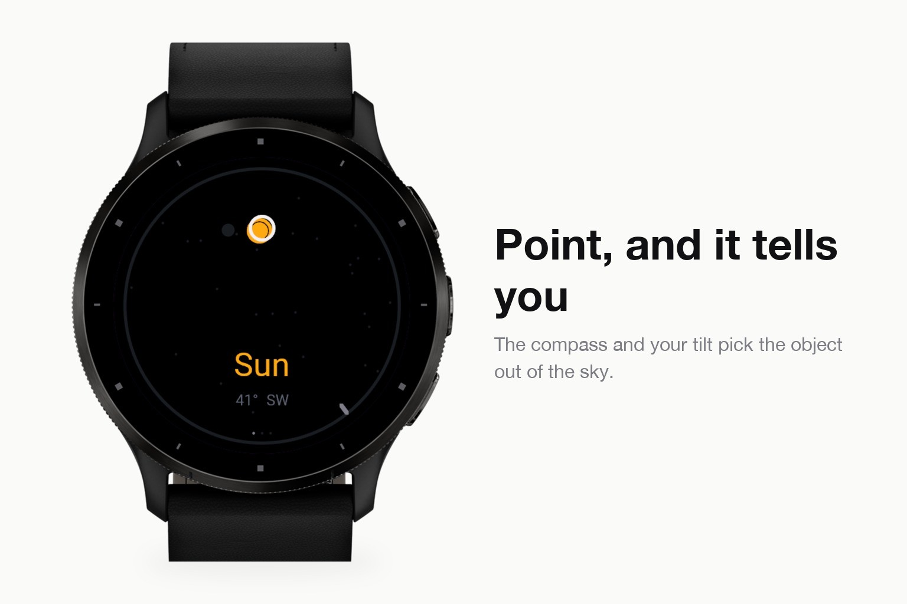
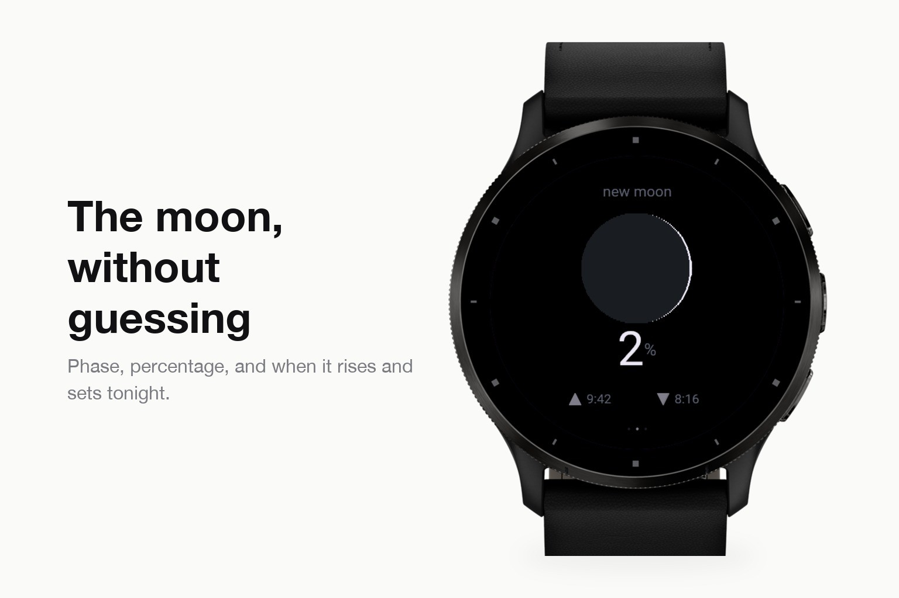
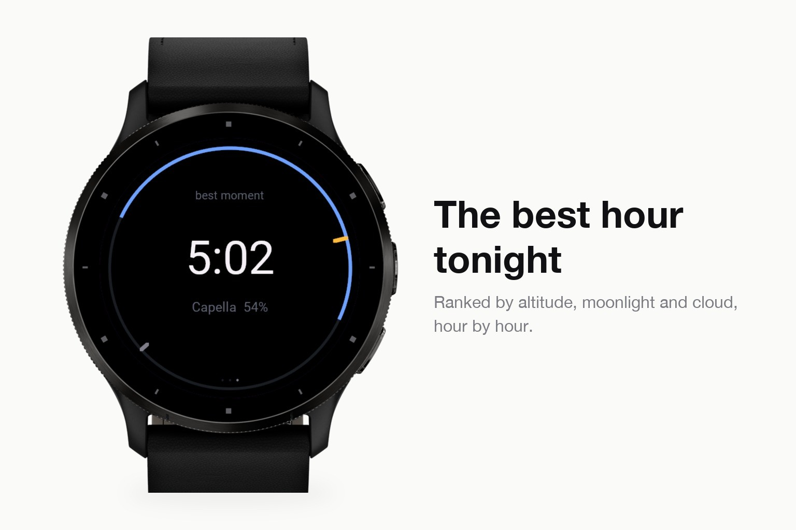

Sport & outdoors · Device app
Point your wrist at something bright and it names it.
Submitted to Garmin and awaiting review. The store page opens once it is approved.



Star apps ask you to match a chart to the sky and work it out yourself. Skyfix does it the other way round: hold your wrist up towards something bright, and it tells you what you are looking at.
The compass gives the bearing, the accelerometer gives how far up you are pointing, and the app works out which object sits in that direction right now. Sun, moon and the five bright planets come from truncated VSOP87 and ELP-2000; about forty-five bright stars come from a table. All of it is computed on the watch, with refraction near the horizon taken into account.